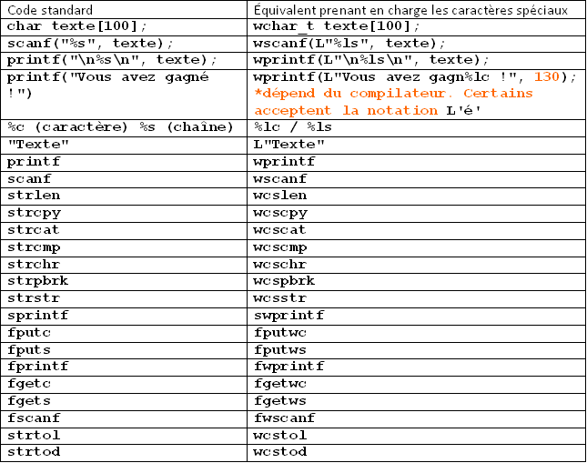

Bonjour à tous ! Aujourd'hui, nous allons voir comment utiliser les caractères spéciaux en langage C. Vous êtes fatigués de ne pas pouvoir utiliser de textes contenant de beaux accents dans vos programmes en C ? Cette injure à la langue française vous révolte :-° ? Ce tuto va vous permettre de rendre vos programmes bien plus fonctionnels et agréables à utiliser ! Nous allons apprendre à utiliser une nouveauté du C99 vous permettant de gérer nativement, sans bibliothèque tierce, les caractères spéciaux dans toutes vos chaînes de textes.
Bonne lecture !
Caractères spéciaux et langage C : un peu d'histoire
Tout d'abord, pour mieux comprendre ce que l'on va faire par la suite, je vous invite à une petite rétrospective sur le langage C.
Pourquoi les caractères spéciaux en C c'est si compliqué ? Pourquoi je ne peux écrire tout simplement ça ?
char texte[4] = {'ζ', 'é', 'Щ', '\0'}
Bizarrement, la réponse à cette question est à la fois simple et compliquée. Simple, parce que le langage C a été inventé par des américains qui, comme vous devez le savoir, n'utilisent pas d'accents ou de lettres bizarroïdes. À une époque où les ordinateurs étaient encore volumineux et disposaient de très peu de mémoire, le type char conçu pour stocker des caractères devait prendre le moins de place possible en mémoire. Il ne peut donc stocker que des entiers de -128 à 127.
Compliquée, parce que 256 nombres ce n'est pas du tout suffisant pour stocker tous les caractères de toutes les langues ! Pensez aux cédilles françaises, aux accents espagnols, aux Umlauts des allemands ou, pire, aux lettres des grecs et des russes ! Et je ne parle même pas des chinois avec leurs milliers d'idéogrammes :waw: ... Le type char ne peut en fait stocker que quelques types de caractères, selon la très ancienne norme ASCII, que vous pouvez consulter sur ce site.
Mais alors, que faire ? Finalement, pour remédier à cette situation intolérable, de nouvelles normes de transformation des lettres en chiffres (on parle d'encodage) ont été successivement instaurées : d'abord l'ASCII étendu, qui a l'avantage de gérer un plus grand nombre de caractères, y compris nos fameux accents (elle couvre presque toutes les langues européennes). Les chinois, arabes et japonais ont dû quant à eux attendre l'arrivée de l'Unicode, qui gère la totalité des caractères présents sur terre, pour pouvoir utiliser les ordinateurs dans leurs langues. Et aujourd'hui encore, cette affaire d'encodage est loin d'être réglée et de nombreux problèmes de comptabilité subsistent... On est donc bel et bien en terrain hostile.
Pour utiliser en C ces nouveaux outils, il nous faut un type de caractères plus grand que char, qui a une "taille" de 1 octet et ne peut donc stocker que 2^8 soit 256 caractères différents. En multipliant le nombre d'octets par 2 voire 4, on augmente significativement le nombre de caractères gérés : une variable qui occupe 2 octets peut stocker 2^{16}, soit 65 536 caractères différents !
Ce type existe, il s'appelle wchar_t, mais il n'a été introduit en C que tardivement. C'est pourquoi pour l'utiliser correctement il nous faudra passer notre compilateur en mode C99 (nous verrons comment on fait). Nous allons aussi utiliser de nouvelles fonctions spécifiques aux caractères spéciaux, mais rassurez-vous dans l'ensemble, tout restera très similaire aux chaînes de caractères "classiques".
Vous l'aurez compris : nous allons tout simplement mettre le type char à la poubelle ! Faites lui vos adieux, il n'est plus adapté à notre époque... De nos jours la mémoire ce n'est plus ce qui manque, et se limiter à quelques lettres est bien trop restrictif. Le nouveau type que nous allons utiliser, le type prend plus de place en mémoire, mais se fera un plaisir de stocker tous les caractères que vous voulez, en ASCII étendu voire en Unicode.
Cette question m'a été posée dans les commentaires : wchar_t signifie Wide Character Type. "Wide Character" signifie littéralement "Caractère Étendu", ce que l'on peut interpréter par "Caractère Spécial" (codé sur plus d'un octet) ; en français on pourrait donc traduire l'expression par Type caractère spécial.
Quelle place prend le type wchar_t en mémoire ?
Cette question est inévitable, et pourtant soyez sûrs que je la redoutais. En deux mots : ça dépend. Selon de nombreux paramètres, en particulier votre compilateur, le type wchar_t peut prendre 2 octets (2 x 8 bits), ou 4, ou plus... Si cela vous intéresse, cette petite ligne de code vous renseignera :
printf("%d", sizeof(wchar_t));
La plupart du temps, sauf compilateur ou système bizarroïde, vous pouvez vous attendre à ce que wchar_t prenne 2 octets.
Mais en fait, selon quelle norme est stockée une lettre dans un wchar_t ?
Là encore, la réponse est à la fois simple et cauchemardesque : ce n'est pas spécifié. Le type wchar_t vous laisse simplement stocker des nombres bien supérieurs à 127, en vue d'utiliser des caractères spéciaux, mais il ne fixe aucun encodage particulier. Là encore, tout dépend de votre compilateur et de votre OS, voire des bibliothèques que vous utilisez. Dans le souci de préserver le côté théorique, simple et multiplateforme de ce tuto, je n'envisage pas de vous faire un cours magistral sur la gestion de l'Unicode. Nous allons d'abord faire nos tests avec l'ASCII étendu, une simple extension de l'ASCII qui permet de gérer nos chers accents et fonctionne aujourd'hui de la même façon sur quasiment toutes les plateformes. Mais soyez prévenus : vos valeurs peuvent être différentes des miennes... Pour utiliser l'Unicode, il faudrait utiliser une bibliothèque tierce, ou les outils spécifiques livrés avec les OS. Et la console Windows est si limitée sur ce point qu'il ne faudrait pas espérer faire des programmes en russe... Certaines bibliothèques proposent même leurs propres types pour gérer l'Unicode, on n'est donc pas sortis de l'auberge si on commence à s'aventurer dans cette voie. Vous l'aurez compris, pour vous apprendre à utiliser le type wchar_t, nous ne ferons que de simples essais en ASCII étendu ayant pour but d'afficher des accents. Cela vous permettra à la fois d'acquérir les bases de la gestion des chaînes de caractères spéciaux et d'accentuer les caractères de vos programmes en console.
Configurer le compilateur
Comme je l'ai dit, avant de pratiquer nous devons faire une petite manipulation pour passer notre compilateur en mode C99.
Je vais vous expiquer pas à pas comment faire sous Code::Blocks 10.05, puisque cet IDE est libre et multi-plateformes, mais la procédure est similaire sur les autres IDE. Cette procédure est spécifique au GNU GCC Compiler, un compilateur libre très utilisé. Les compilateurs propriétaires, comme celui de Microsoft, aurons d'ailleurs de fortes chances d'être déjà en C99.
Dans le menu de Code::Blocks, allez dans "Settings" puis "Compiler and Debugger.."
Vérifiez que dans la partie "Selected Compiler", l'option GNU GCC Compiler est bien séléctionnée.
Ensuite, cliquez sur l'onglet "Compiler Settings" puis allez dans le sous-onglet "Other options".
Dans le champ de texte qui se présente à vos yeux, tapez EXACTEMENT cette chaîne de texte : -std=c99
Cliquez sur "OK" puis, seulement maintenant, créez un nouveau projet. On y est arrivé :-° !
Modifier les directives de préprocesseur du projet
En plus des fichiers de la bibliothèque standard que vous intégrez habituellement à vos projets, vous allez ajouter cette ligne à vos directives de préprocesseur :
#include <wchar.h>
C'est en effet dans cette partie de la bibliothèque standard du C99 que se trouvent les fonctions de manipulation des caractères spéciaux qui nous intéressent.
Nous y sommes ! Voyons maintenant comment créer puis afficher une chaîne de caractères accentués. Nous allons nous exercer sur des caractères simples, les caractères ASCII étendu, qui incluent les è, î, à, etc. En effet, le type wchar_t permet de stocker bien d'autres caractères mais compilateur et consoles pourraient se montrer capricieux, comme je l'ai déjà expliqué.
Si les chaînes standard sont des tableaux de char, les chaînes ASCII étendu sont des tableaux de wchar_t. Rien ne change à ce niveau-là ! Ce code créé un tableau de 50 wchar_t, donc 49 caractères.
Aïe, ça ne fonctionne pas :colere: ... C'est tout à fait normal, vu que ce code tente de remplir une chaîne wchar_t avec une chaîne classique ! Les deux types sont différents, et donc ça coince à la compilation... Pour spécifier au compilateur qu'il s'agit d'une chaîne wchar_t étendu, vous DEVEZ ajouter un L avant les guillemets. Ainsi, ce code est parfaitement correct.
wchar_t texte[50] = L"Salut !";
Attention : ce n'est pas à ce stade que vous pouvez ajouter des accents. En effet, ce code a de gros risques de planter à la compilation !
wchar_t texte[50] = L"Salut Gérard !";
Mais alors, comment initialiser cette chaîne si elle contient un é ? Nous allons dans un premier temps faire comme au bon vieux temps, caractère par caractère. Ainsi, ce code est parfaitement correct. Notez qu'il faut ajouter le L avant la valeur de chaque lettre. Ce n'est pas indispensable, mais bien plus propre !
wchar_t texte[50] = {L'S', L'a', L'l', L'u', L't', L' ', L'G', 130, L'r', L'a', L'r', L'd', L' ', L'!', L'\0'};
C'est quoi ce 130 qui traîne ?
Bonne question ! C'est en fait le é de ce pauvre Gérard. Tous les compilateurs n'acceptent pas la notation L'é', pourtant plus pratique. Il faut donc remplacer la lettre é par sa valeur en ASCII étendu, et cette valeur, c'est 130. Vous trouverez les valeurs ASCII étendu correspondant à chaque caractère sur ce site.
Cette méthode d'initialisation n'est extrêmement pas pratique, c'est pourquoi il existe une petite astuce pour s'en passer : les échappements. Les échappements sont tout simplement des raccourcis pour faire figurer des caractères spéciaux dans l'initialisation d'un chaîne. Un échappement se présente sous la forme : \xNN NN est tout simplement la valeur ASCII du caractère à afficher. Elle doit être exprimée dans le système hexadécimal. Pour convertir un nombre standard en valeur hexadécimale, vous pouvez utiliser la calculatrice Windows ou un outil sur internet, en voici un.
Revenons à notre code source de tout à l'heure. Je vous le remémore.
wchar_t texte[50] = {L'S', L'a', L'l', L'u', L't', L' ', L'G', 130, L'r', L'a', L'r', L'd', L' ', L'!', L'\0'};
Plutôt terrible, n'est-ce pas ? Sachant que la valeur de "é" en ASCII est 130, et que cette valeur vaut 82 en hexadécimal, on va pouvoir utiliser pour "é" l'échappement \x82 ! Voici le code en question.
wchar_t texte[50] = L"Salut G\x82rard !";
Un peu plus commode, hein ?
Afficher et récupérer une chaîne de wchar_t
Nous allons maintenant tester un bout de code qui devrait vous sembler intuitif, mais qui est vraiment archi-faux :p !
Il fallait s'en douter, ça ne marche pas. Ce serait trop beau ! Il manque en effet trois choses à ce code pour le rendre fonctionnel. Vous devez connaître la première.
Il faut ajouter un L avant chaque guillemet représentant une chaîne. C'est primordial pour indiquer qu'il s'agit d'une chaîne de texte wchar_t !
Les codes %c et %s, indiquant où insérer un caractère et une chaîne de caractères, ne fonctionnent plus ! Il faut les remplacer par leur équivalent, c'est-à-dire %lc et %ls !
Enfin, TOUTES les fonctions de manipulation du texte doivent être remplacées par leurs équivalents dans la bibliothèque wchar.h. Ne faites pas ces têtes-là, ces fonctions sont heureusement similaires aux fonctions que vous connaissez, leur prototype sont quasiment les mêmes. Les char sont tout simplement remplacés par des wchar_t, et le nom de la fonction change légèrement. L'équivalent de printf est ainsi wprintf, et de fgets est... fgetws.
On doit réapprendre le nom des fonctions ?
Idéalement oui, mais vous trouverez un tableau de conversion préparé par mes soins à la fin du tuto. Et si vous utilisez les caractères spéciaux régulièrement, vous maîtriserez vite ces petits changements !
Pour faire une petite synthèse, je vais vous montrer deux codes complets. Les deux sont corrects, mais l'un permet de gérer les accents, l'autre non. Ce code vous dit bonjour, récupère votre prénom, et vous souhaite une bonne journée. Il écrit ensuite votre nom dans le fichier "nom.txt". Je sais, c'est un peu plat mais c'est un très très bon moyen de se familiariser avec la bibliothèque wchar.h ;) .
#include <stdlib.h>
#include <stdio.h>
#include <wchar.h>
int main()
{
wchar_t nom[100] = {0}; // On initialise une chaîne de texte ASCII étendu.
wprintf(L"Bonjour !\nQuel est votre nom ?\n"); // On demande à l'utilisateur son nom.
fgetws(nom, 100, stdin); // On récupère ce nom grâce à la fonction fgetws, équivalent de la fonction fgets.
FILE* fichier = NULL;
fichier = fopen("nom.txt", "a"); // On ouvre le fichier nom.txt en mode écriture.
wprintf(L"Bonne journ%lce, %ls\n", 130, nom); // On utilise wprintf, l'équivalent de printf en ASCII étendu, pour afficher le nom de l'utilisateur.
fwprintf(fichier, L"%ls", nom); // On écrit ce nom dans le fichier grâce à l'équivalent de fprintf.
fclose(fichier); // On ferme le fichier.
return 0;
}
Bonjour !
Quel est votre nom ?
Gérard
Bonne journée, Gérard !
Je l'ai testé, et même si je mets des accents ça marche !
Selon votre OS, c'est tout à fait possible, mais attention aux bugs dans la suite du programme... Sans parler des caractères codés par un entier supérieur à 127, qui ne seront pas gérés et pourront faire tout planter.
Exerçons-nous !
Allez, deux-trois petites idées un peu plus simples pour se familiariser avec la manipulation des caractères spéciaux.
Créez un programme qui détecte la langue de l'utilisateur ! Ce n'est pas si compliqué que ça en a l'air. Je peux par exemple vous indiquer que.... -les caractères ç et ê sont spécifiques au français. -le caractère ñ est spécifique à l'espagnol. -le caractère ß est spécifique à l'allemand. -le caractère å est spécifique au suédois :euh: . Utilisez la fonction wcschr (équivalente à strchr).
Créez un programme qui indique la valeur d'un caractère spécial wchar_t (selon l'encodage votre compilateur). Il vous sera utile par la suite !
Adaptez le jeu de pendu du tutoriel de M@teo21 sur le C pour qu'il gère les accents ! Il faudra bien sûr une fonction qui les supprime, car choisir la lettre E doit être équivalent à choisir les caractères È, É, Ê, Ë, E, tous à la fois...
Les corrigés des deux premiers exercices sont disponibles ci-dessous. Quant au dernier exercice, je vous laisse trouver...
Correction du premier exercice
#include <stdio.h>
#include <stdlib.h>
#include <wchar.h>
enum {ESPAGNOL, SUEDOIS, ALLEMAND, FRANCAIS, ERREUR};
int detectionlangue(wchar_t texteaverifier[]);
int main()
{
wchar_t texte[200]; // On initialise une chaîne de 200 wchar_t.
wprintf(L"Bonjour cher Z%lcro !\nQuelle langue parles-tu ?\nDis-moi une phrase !\n", 130);
fgetws(texte, 200, stdin); // On demande et récupère le nom de l'utilisateur.
switch (detectionlangue(texte))
/* On demande à la fonction detectionlangue
quelle langue parle l'utilisateur. */
{
case ESPAGNOL:
wprintf(L"%lc Hablas espa%lcol !\n", 173, 164);
break;
case SUEDOIS:
wprintf(L"Euuuh... vous parlez su%lcdois...\n", 130);
break;
case ALLEMAND:
wprintf(L"Du sprichst Deutsch !\n");
break;
case FRANCAIS:
wprintf(L"Tu parles fran%lcais ! Tu es un vrai Z%lcro !\n", 135, 130);
break;
case ERREUR:
wprintf(L"Je ne peux pas d%lctecter ta langue petit Z%lcro !\n", 130, 130);
break;
default:
wprintf(L"Je ne peux pas d%lctecter ta langue petit Z%lcro !", 130, 130);
break;
} // En fonction de la langue de l'utilisateur, on renvoie un message différent.
return 0;
}
int detectionlangue(wchar_t texteaverifier[])
{
/* On teste la présence dans "texte" de caractères spéciaux
propres à certaines langues, et on en déduit la langue de
l'utilisateur. */
if (wcschr(texteaverifier, 164) != NULL)
{
return ESPAGNOL;
}
else if (wcschr(texteaverifier, 165) != NULL)
{
return ESPAGNOL;
}
else if (wcschr(texteaverifier, 134) != NULL)
{
return SUEDOIS;
}
else if (wcschr(texteaverifier, 143) != NULL)
{
return SUEDOIS;
}
else if (wcschr(texteaverifier, 225) != NULL)
{
return ALLEMAND;
}
else if (wcschr(texteaverifier, 128) != NULL)
{
return FRANCAIS;
}
else if (wcschr(texteaverifier, 135) != NULL)
{
return FRANCAIS;
}
else
{
return ERREUR;
}
}
Et voilà...
Bonjour cher Zéro !
Quelle langue parles-tu ?
Dis moi une phrase !
Das weiß ich nicht !
Du sprichst Deutsch !
Correction du deuxième exercice
#include <stdio.h>
#include <stdlib.h>
#include <wchar.h>
int main()
{
wchar_t caractereatester;
wprintf(L"Tapez un caract%lcre !", 138);
fgets(&caractereatester, 2, stdin); // On récupère la saisie dans caractereatester.
wprintf(L"Le caract%lcre %lc a pour valeur %d !", 138, caractereatester, caractereatester); // On affiche la valeur du caractère comme un int.
return 0;
}
Bon travail ! Et comme promis, voici le tableau récapitulatif...

Voilà, c'est fait. Ce n'était pas si compliqué, mais cela demande quelques petites adaptations au quotidien. Essayer wchar_t, c'est l'adopter. Il vous permet en effet d'encoder vos caractères sur 2 ou 4 octets au lieu d'un et permet ainsi, selon votre OS ou la bibliothèque que vous utilisez, d'utiliser bien plus de lettres que celles que la très réduite table ASCII vous propose. Bonne continuation !